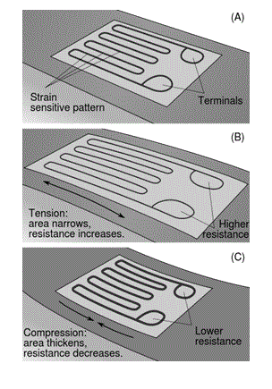

• Types
Transducer based on Quantity to be Measured
Transducer based on the Principle of Operation
Transducer based on Whether an External Power Source is required or not
Active Transducer
Passive Transducers
Transducer
Instrumentation is the heart of industrial applications. Instrumentation is the art and science of measuring and controlling different variables such as flow, level, temperature, angle, displacement etc. A basic instrumentation system consists of various devices. One of these various devices is a transducer. A transducer plays a very important role in any instrumentation system.
An electrical transducer is a device which is capable of converting the physical quantity into a proportional electrical quantity such as voltage or electric current. Hence it converts any quantity to be measured into usable electrical signal. This physical quantity which is to be measured can be pressure, level, temperature, displacement etc. The output which is obtained from the transducer is in the electrical form and is equivalent to the measured quantity. For example, a temperature transducer will convert temperature to an equivalent electrical potential. This output signal can be used to control the physical quantity or display it.
Note that any device which is able convert one form of energy into another form is called as a transducer. For example, even a speaker can be called as a transducer as it converts electrical signal to pressure waves (sound).But an electrical transducer will convert a physical quantity to an electrical one.
Types of Transducer
There are of many different types of transducer, they can be classified based on various criteria as:
Types of Transducer based on Quantity to be Measured
• Temperature transducers (e.g. a thermocouple)
• Pressure transducers (e.g. a diaphragm)
• Displacement transducers (e.g. LVDT)
• Flow transducers
Types of Transducer based on the Principle of Operation
• Photovoltaic ( e.g. a solar cell )
• Piezoelectric
• Chemical
• Mutual Induction
• Electromagnetic
• Hall effect
• Photoconductors
Types of Transducer based on Whether an External Power Source is required or not
Active Transducer
Active transducers are those which do not require any power source for their operation. They work on the energy conversion principle. They produce an electrical signal proportional to the input (physical quantity). For example, a thermocouple is an active transducer.
Passive Transducers
Transducers which require an external power source for their operation is called as a passive transducer. They produce an output signal in the form of some variation in resistance, capacitance or any other electrical parameter, which than has to be converted to an equivalent electric current or voltage signal. For example, a photocell (LDR) is a passive transducer which will vary the resistance of the cell when light falls on it. This change in resistance is converted to proportional signal with the help of a bridge circuit. Hence a photocell can be used to measure the intensity of light.

Above shown is a figure of a bonded strain gauge which is a passive transducer used to measure stress or pressure. As the stress on the strain gauge increases or decreases the strain gauge bends or compresses causing the resistance of the wire bonded on it to increase or decrease. The change in resistance which is equivalent to the change in stress is measured with the help of a bridge. Hence stress is measured.
 by
by